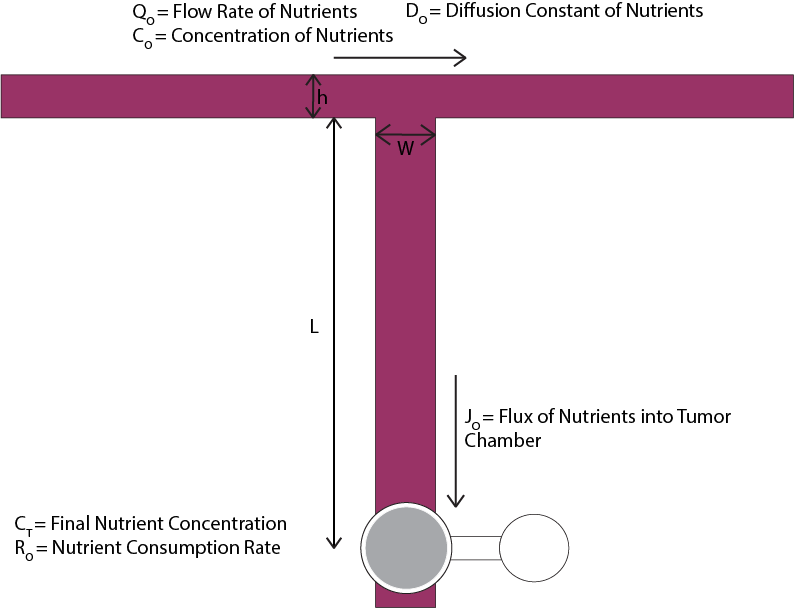
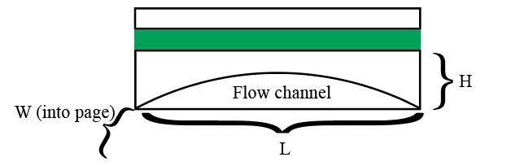
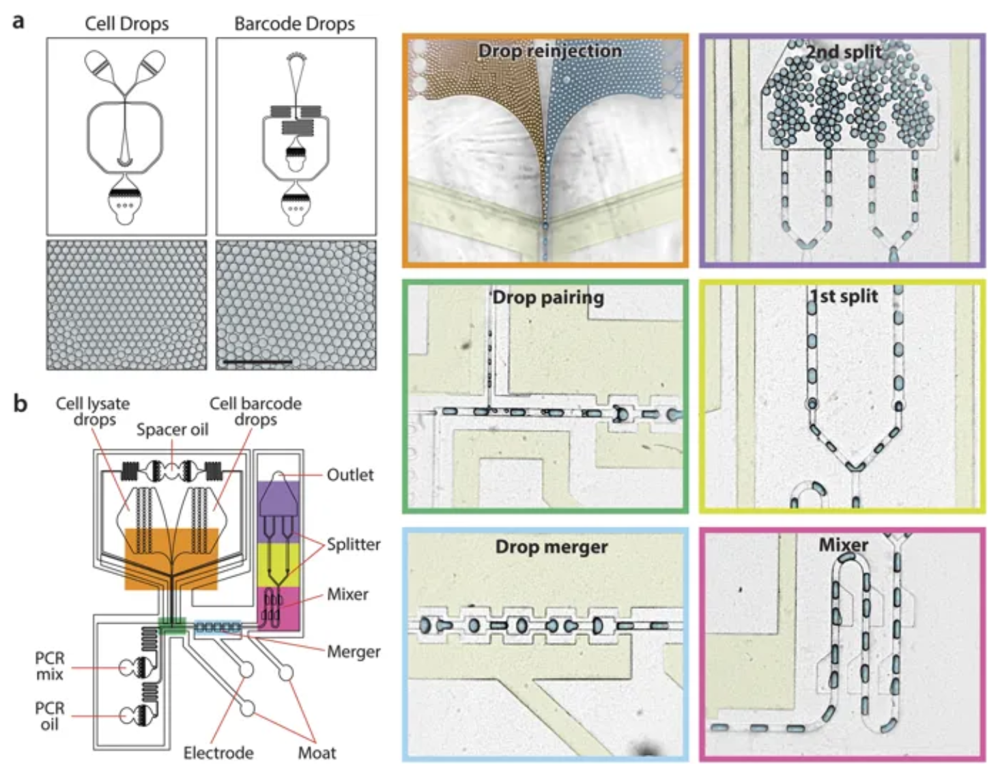

A Lab-on-a-Chip Design for Cancer-Associated-Fibroblast Transcriptomic Profiling
Emily Gu, Jasmine Gupta, Joshua Lin, Arjit Misra, Eliott Park
December 2019
Abstract
Recent research has indicated that interactions between cancer cells
and the stroma may play a pivotal role in the onset of metastasis–the
primary cause of cancer death. Studies have gradually clarified the role
of cues from tumor microenvironments through cancer-on-a-chip models,
which utilize microfluidic chips with small chambers for cell culturing
along with other controllable parameters. Specifically,
carcinoma-associated fibroblasts (CAFs) have been determined to play
major roles in the progression of cancer. We present a co-culture device
that will examine CAF recruitment at single-cell resolution by means of
single cell RNA sequencing (scRNA-seq). This device includes a primary
and secondary chip and operates through two cycles: recruitment and
flush. The primary chip has three overlaid layers that include the
co-culture chambers, a pneumatic valve system, and exit channels. The
second chip consists of microfluidic channels designed for generating
single cell droplets to be used by sequencing analyzers. Co-culturing in
parallel wells allows for paracrine signaling, which leads to the
recruitment of fibroblast candidates by the tumor cell lines. The
migration of fibroblasts will be detected using real time imaging, and
valves will control the exit channels. Media is delivered in two
parallel channels lying perpendicular to the migration channels. We
believe our device can be utilized to benefit future cancer research
endeavors. We did not test our device due to the scope of our project,
and we acknowledge that there are potential ideas/issues that could be
further addressed.
Introduction
For years, researchers have tried to dissect the stages of
carcinogenesis, focusing primarily on direct alterations to cancer cells
genetically and epigenetically. However, current studies in genetics and
cell biology have indicated that tumor growth is not only determined by
the malignant founder cells, but also the surrounding tumor stroma.
. The
harmful effects of cancer cells cannot be manifested without interaction
between cancer cells and their local environment. A typical tumor
structure consists of cancer cells and other surrounding stromal cells
in the tumor microenvironment, such as fibroblasts, lymphatic
endothelial cells, immune cells, and angiogenic vascular cells.
Fibroblasts are one of the largest components of the stroma. CAFs can be
defined as a cell type that promotes tumorigenic features by secreting
cytokines.
Investigation of the critical molecular factors that contribute to tumor
evolution is important as these serve as potential targets for
therapeutic development. Thus, our group decided to
synthesize a device specific to this topic.
CAFs are hypothesized to influence tumor progression through
cell–cell interactions and secretion of extracellular matrix components
(ECM), chemokines, and more. Furthermore, CAFs are commonly found next
to cancer cells, and can be identified by their expression of -smooth
muscle actin (-SMA). Traditional in vitro studies of tumor cell
processes have been conducted with commercially available transwell
chambers by measuring the density of cells migrating vertically through
a gel into a filter. However, many specific details still remain
unclear. Recent studies have looked at utilizing microfluidic 3D
environments for cell co-culturing, however these existing systems are
limited to co-culturing on 2D surfaces at initial stages. Additionally,
cells are usually engulfed by ECM in in vivo environments, and
syringe pumps are used to pattern cells in the 3D matrix. Unfortunately,
complicated protocol for existing systems limit their real biological
and research applications. In this paper, we
present a microfluidic-based co-culture device that will examine CAF
recruitment at a single-cell resolution using scRNA-seq. In theory, the
tumor cells and fibroblasts will be co-cultured during the whole
experimental period. This is a suitable platform for investigating
mechanisms of CAF recruitment in a well defined cellular
environment.
Device overview
Chip 1
The overall operation of the device comprises two distinct
cycles:
The recruitment cycle: Organotypic co-culture in
the parallel wells enables cell-cell communication via paracrine
signaling, and will cause recruitment of fibroblast candidates (and
induction of CAFs) by the tumor cell lines.
The flush cycle: When cellular migration is
detected by a real-time imaging camera, that specific migration channel
is flushed such that the migrated cells are translocated to the exit
channels, which span the middle and base layer. The exit channel is
flushed via the flush channel and cells are thus sent to collection
chambers.
Media is delivered through two parallel channels orthogonal to
migration channels. The flow rates are matched during the recruitment
cycle, such that the fluid media in the migration channels is static and
delivery of nutrients is diffusion-based only. This is further
elucidated in the Media Delivery subsection. branching out from each
migration channel is an exit channel, which is sealed during the
recruitment cycle.
Chip Layout
The first chip is made up of four distinct layers. As shown in Figure
1, the four layers will be overlaid to form the complete chip. The
bottom most layer contains the outlet channel and well for sample
collection after they are flushed out of the migration channel. This
layer also extends out farther than the middle and top layers, allowing
researchers access to the collection wells for sample transport. The
topmost layer contains the actuation channels for the valves. The 3rd
layer contains the co-culturing system and migration channel. The second
layer contains only micropillars extending into the migration channels.
Bordering either side of the middle layer are the media supply channels.
Running perpendicular to the test channels, they are 800μm wide and 50μm deep. The length of the channel
depends on the number of samples being tested, each test sample spanning
around 1.5mm with space on either side. The cross channels connecting
the two media channels do not have media flowing through them but
instead rely on diffusion for nutrients. They are 6840umX300μmX50μm. The tumor cell culture well is a
1mm diameter circle with a depth of 50μm. The fibroblast culture chambers
are 320μm in diameter and 50um
deep.
Media Delivery
As observing CAF migration may take days, we must constantly deliver
the proper nutrients in order for the samples to survive. For our proof
of concept and because there was sufficient literature regarding tumor
consumption rate, we used oxygen as the nutrient on which we conditioned
the length of the channel between the media delivery channel and the
chambers. This system can be extended
to include multiple nutrients, in which case the concentrations and
consumption rates of each would have to all equalize over the same
distance. As mentioned above, the channel depth Z = 50μm, and the flow rate
of the media Qo=
5.8094*10^-11 m3/s.
We found the diffusion constant of oxygen in media to be Do=
3.00 × 10−5 cm2 s−1 and the tumor
consumption rate of oxygen to be Ro=
3.53 × 10−4 mol cm−3 for a tumor with a 500
micron diameter. We may choose our own
media concentration to condition the distance between the chamber and
the media channel, L. The only
constraint we have is that L
must be greater than or equal to the width of the pneumatic valve system
and the width of the micropillar array, which we will call Wm and is equal
to 100um. Our valve channel width, Wv, comes out to
be 200 microns and our resolution r is 10 microns. The overall width
of all valve channels scales with the number of valves, Nv. The number
of migration channels, and thus the number of cell populations we are
studying, which we will call Nc, determines
the number of valves due to the scaling of the multiplexor. : Nv = 2log2(Nc)
The relationship between cell populations and L is defined below: L = (Wv + r)Nv + Wv
For the current iteration of our device, we use 6 cell populations.
Plugging in correspondingly yields a minimum length including the
micropillar array L =
2620μm.
We calculate the relationship between length and cell media oxygen
concentration Co by setting
the rate at which oxygen enters the tumor chamber, Ao, equal to the
oxygen consumption rate of the tumor, Ro, as seen in
Fig. 2.

Zoomed in view of media channel with oxygen diffusing to
tumor chamber.
We solve for Ao with the
diffusive flux Jo of oxygen
entering the tumor chamber: Ao = |Jo|WZJo can be
found with the concentration gradient in the channel, Cb, using Fick’s
first law:
$$|J_o| =
D_o|{\frac{dC_b}{dy}}|$$ Since the oxygen concentration in the
media channel is always constant and the concentration at the chamber
will be consumed (equal to 0), we know that Cb is linear and
thus can solve for it linearly:
$$\begin{gathered}
|J_o| = D_o{\frac{C_o - C_T}{L}} \\
|J_o| = {\frac{D_oC_o}{L}}
\end{gathered}$$ We set Ao equal to
Ro as
mentioned earlier and plug in Jo and solve for
L in terms of Co:
$$\begin{gathered}
R_o = A_o \\
R_o = {\frac{D_oC_o}{L}}WZ \\
L = {\frac{D_oWZ}{R_o}}C_o
\end{gathered}$$ Plugging in our values yields the relationship:
L = 1.27 × 10−5 cm4/molCo
If we plug in the minimum required distance between the media channel
and the chamber we yield: $$\begin{gathered}
C_o = {\frac{2.62cm}{\SI{1.27e-5}{\cm^4\per\mol}}} \\
C_o = {\SI{2.06e5}{\mol\per\cm^3}}
\end{gathered}$$ The required oxygen concentration in the media
channel is 2.06 × 105 mol cm−3 for a
length between the media channel and the tumor culture chamber of 2620
microns. We were unable to find a consistent value for CAF oxygen
consumption, so we will assume similar consumption rates of the CAFs and
tumor cells. We impose the same distance between the media supply
channel and the CAF chamber in order to allow us to use the same media
supply and maintain oxygen delivery-consumption equilibrium.
As an array of factors contribute to CAF migration, we look to previous
literature to predict the distance at which CAFs are recruited by
tumors. Karamichos et. al. finds that the distance comes out to be 500
microns, which is the distance we will use between the tumor cell
culture well and the fibroblast culture well .
Micropillars
We incorporated micropillars to prevent the fibroblasts/tumor cells
from escaping and traveling to other portions of the device that they
are not supposed to be in. We considered that the size and density of
the micropillars may determine how this could be achieved. Our
micropillars have micro-gaps of 8 microns, which is less than the
diameter of cells that will be utilized. This value was determined
according to existing literature, which also detail the fabrication of
microfluidic co-culture devices . Micropillars span for 100
microns of our microchannel. The dimensions of the micropillars were
optimized with the channel height. The height for our micropillars is 50
microns, and the diameter is 50 microns.
To account for the nature of PDMS, we checked our values from the
displacement obtained from forces applied according to existing
literature. The distributed force was represented by an equivalent point
load on the micropillar, resulting in a deflection of the micropillar
tip. Because our aspect ratio is less than 5 (value predetermined by
literature), both bending and shear were taken into account in the
force-deflection model (equation in literature). In all, the maximum
displacement of the micropillar was calculated according to the
equations. Force was calculated to be 1.125 × 10−10 N. This
helped us determine the dimensions of our micropillars .
Additionally, we looked at how the micropillars affected the
volumetric flow rate of liquid in the microchannel. The flow rate is
defined as Q = dV /dt with V representing the volume of fluid inside the
microchannel. According to literature, a derived flow rate ratio was
determined where Q is flow rate in a cavity with pillars and Q[0] is
flow rate in an empty cavity used for comparison .
The literature showcases the flow rate ratio Q/Q[0] as a function of
the micropillar density φ and the micropillar aspect ratio h. Regardless
of what the ratio h/d actually is, if the pillar density is small,
Q/Q[0] tends to approach one. On the other hand when the pillar density
is large, the ratio Q/Q[0] approaches zero. It is noticed that the
higher the density of micropillars, the slower the flow rate Q in a
control cavity with pillars, compared to the case of an empty cavity.
Therefore, it can be concluded that the addition of micropillars does
not enhance the pumping properties of a microchannel .
Priming
To seed the cells in the chip, simply inject the proper amount of
cells in the their respective inlets. Using data from previous
fibroblast culturing procedures and and fitting a quadratic curve, the
following equation can be found with x corresponding to the volume of
media and y105 the number of
cells.
y = −0.002715x2 + 0.623961x − 0.486748
In addition to priming cells, we prime the exit chambers with cell
media culture. We close off all migration channels on both sides (all
multiplexor valves and valve IV in Fig. 1) to ensure that the primed
cells are not exposed to the full force of the media inlet initially.
The exit channel to the migration chamber (valve II in Fig. 1) is also
closed off for the same reason. The valve between the right hand media
channel and the flushing channel (valve III in Fig. 2) is opened to
allow media to flow through the exit channels to the bottom layer and
out to 2 ml centrifugation tubes where the CAF samples will be collected
sent to the droplet generation chip. In this step, just enough media is
pumped through to allow for the connection tube outlet to be submerged
in fluid inside of the centrifugation tubes. This allows us to assume
atmospheric pressure as the final pressure at the end of the escape
channels.
Flushing Cells
As previously discussed, the migration of fibroblasts will be
detected using real time imaging. Once the fibroblasts have traveled
past the exit channel, a series of valves will open or close to
facilitate flushing. The valves directly on either side of the
fibroblast culture chamber will close stopping any migrated fibroblasts
from returning to the chamber. The exit channel valve and corresponding
valve in the multiplexor are opened allowing migrated fibroblasts to be
flushed into the exit valve using the left media channel. Then the flush
channel valve below the migration channel gets opened allowing use of
the right media channel to help move the cells from the entrance of the
exit channel, leaving the chip and arriving at the external collection
chambers.
While flushing the cells, we want to ensure that we do not apply
excess stress that could affect the morphology or lyse the cells. Thus
we calculated the max velocity and therefore max volumetric flow rate
that the flushing can reach. Using the following work balance, one can
solve for velocity. Inputting the critical shear stress for lysis of
0.75 Pa and the channel dimentions will give the maximum velocity of
0.03872 m/s. This calculation also
assumes the mass of the cells and media are similar to the mass of
water.
From the max velocity, we can also calculate the maximum volumetric
flow rate as shown in equation 7. Thus the maximum volumetric flow rate
= 5.8094*10^-10 m3/s to ensure that the
cells do not lyse. As an additional engineering safety factor, the flow
rate during flushing will not exceed 1/10 of this maximum flow rate.
$$Q = \frac{V}{t} = \frac{Ax}{t} =
Av$$
Pneumatic Control
To actuate our device, we propose push-down pneumatic valves. All
valves are fabricated on the topmost layer, layer 3. Longitudinal
sections along the media channel and an actuation channel are shown:
Longitudinal section along the media channel

Longitudinal section along the actuation channel. Note the
parabolic arch of the flow channel.
We define the maximal height of the flow as d, the minimum thickness of the
bottom half of the slab H/2 − d = h and
the pressure in the valve as P. Kartalov et. al show that a
pneumatic valve may be modeled as a superposition of three basic
mechanical models: a thick beam, thick spring, and thin spring. They
further report the Young’s modulus of elasticity for PDMS to be 0.36
MPa. We will follow their work to derive actuation pressures for our
device operations. We will not deviate from their evaluation of thin and
thick spring models. (The thin spring model assumes the membrane is
equivalent to a thin spring that contracts as the valve closes; the
thick spring model assumes the membrane is equivalent to a suspension
bridge across the flow channel, supported by two beams.) However, for
the first (thick beam) model, Kartalov et. al modeled the valve as a
series of two thick beams with uniform rectangular cross-sections. Here,
we will use a single thick beam with non-uniform cross section along the
length L of the valve, such
that the lower bound of the beam is given by a parabolic arc, −ax2 − h,
where $$a = \left( \frac{H}{2} - h \right)
\frac{4}{L^2}.$$ The moment of inertia, I is given by $$\begin{aligned}
I =& \iint_A y^2 dA \\
I =& \int_{-\frac{W}{2}}^{\frac{W}{2}} \int_{-ax^2 -
h}^{\frac{H}{2}} y^2 dy dx
\end{aligned}$$ Then, upon integration, we obtain: $$I = \frac{5 a^3 W^7 + 84 a^2 W^5 H + 560 a W^3
H^2 + 280 W (8 H^3 + d^3)}{6270}$$
The deflection of a thick beam is given by: $$\begin{aligned}
\delta &= FL^3 / 3EI \\
\text{here,} \quad
\delta &= d \\
F &= PWL \\
P &= \frac{3dEI}{WL^4}
\end{aligned}$$ Combining all our thick beam model and the thin
and thick spring models from Kartalov et al, and accounting for true
strain, we arrive at the following final model, where I is as derived previously: $$\begin{gathered}
P = E \cdot ln\Big(1 + \frac{3dEI}{WL^4} +
16\frac{d^2}{3}\Big(\frac{1}{W^2} + \frac{1}{L^2}\Big) + \\
64 \Big( \Big( \frac{1}{W^4} + \frac{1}{L^4} \Big) \Big(\frac{d^3
H}{3} - \frac{d^4}{5} \Big)\Big) \Big) \\
\end{gathered}$$
Based on literature, we know that actuation pressures of 200kPa are
relatively easily accessible . We modeled the pressures
necessary to actuate the flow channels given our migration channel
dimensions (300 μm wide and 50 μm high) and height of the slab 100 μm.
We arrive at the following dimensions:
Actuation channel width over regions of actuation = 200 μm,
required pressure = 182kPa.
Actuation channel width over regions that must not be actuated =
200 μm, required pressure = 13.6MPa.
Thus, we will use maximal pressures of about 200kPa for channel
actuation, which will tightly seal regions of actuation but will not
affect orthogonal channels where actuation channel width is narrow.
Chip 2
The second device combines existing methods for droplet generation
and serves as a potential intermediary circuit between the culturing and
recruitment device and the ensuing sequencing phase. Much simpler in
design compared to chip 1, the device consists of five inlets for the
dispersed phase (CAFs, barcoded beads, and PCR reagents) and continuous
phase (oil), two junctions (coflow droplet generation and micropillar
merger), and an exit channel. Here, we briefly outline the rudimentary
workings for our secondary chip, which is based on the Ab-seq workflow
as described by Shahi et al. As CAFs are not identical, this gives us
insight as to the individual protein make up of these CAFs and will
hopefully allow us to recognize patterns as to which particular protein
markers determine cell recruitment. Further reading for an advanced
technical overview is recommended.
Droplet generation
After exiting the first device, sorted single-cell CAFs enter an
inlet flow channel where they are joined with gel barcoded beads at a Y
junction and enter a flow-focusing droplet generator. Devices parameters
such as channel geometries, viscosities of the two phases, and flow
pressure are controlled such that the barcoded beads with lysis buffer
enter the junction at a much higher frequency compared to the CAFs to
avoid double encapsulation. Then, CAF droplets and PCR reagents enter
the following junction in an alternating order by synchronizing flow
rates, and adjacent droplets are merged two to one as they pass through
the merging chamber. The resulting droplets exit the device ready for
library preparation and sequencing.
scRNA-seq
(transcriptomic profiling)
Following generation, the droplets are thermocycled, breaking the
emulsion to allow DNA purification for library preparation. Then, the
library is sequenced using an Illumina MiSeq kit following standard
MiSeq sequencing protocol. To remove potential PCR and sequencing
errors, we employ bioinformatic methods outlined by Shahi et al., which
utilizes methods such as running raw barcode sequence reads through
quality filters, selective data processing with group mapping, and UMI
correction.
Abseq workflow overview (Shahi, P., Kim, S., Haliburton, J.
et al. 2017)

Abseq droplet generation device summary (Shahi, P., Kim, S.,
Haliburton, J. et al. 2017)
Detailed fabrication
Procedures
Base Layer
Base Layer Mask
Since there is no valve actuation in the base layer, we choose to
fabricate channels with rectangular cross-sections. Thus, we choose to
use a negative photoresist, SU-8, to create the channel mold. We take a
cleaned silicon wafer (cleaned by reactive ion etching followed by DI
water wash) and spin coat SU-8 50 and spin coat at 2000rpm for 1 min.
This gives us a height of about 50 μm. We pre-bake at 65C for 6
minutes and softbake at 95C for 20 minutes. We expose with about
300 mJcm−2 energy through the mask. We develop for about 6
minutes. We rinse with isopropyl alcohol and dry with nitrogen gas. hard
bake is not required per the SU-8 datasheet . To facilitate release, we
expose to trimethylchlorosilane gas for 1 min. Once it is released, we
transfer to a plastic dish .
Next, we use General Electric Silicones RTV 615 elastomer for our
PDMS slab. In order to achieve a thickness of approximatelty 100 200 μm,
we will spin coat at 1000 rpm for 25 seconds, based on estimates from
literature . The slab is baked at 80C for
1.5 hours. To facilitate release, we expose to trimethylchlorosilane gas
for 1 min. Once it is released, we transfer to a plastic dish. .
Micropillars
To fabricate micropillars, we follow the procedure outlined in
literature. .
We then pour PDMS onto micropillars and follow the PDMS fabrication
protocols outlined above.
Culture Layer
Culture Layer Mask
Because pneumatic control necessitates rounded parabolic channels, we
choose to use positive photoresist AZ 100 XT PLP. to create channel
molds . The
protocol is almost identical to that of SU-8 (2000rpm for 1 min for a
50 μm height), save an additional step to create rounded cross-sections
by heating to above the resin’s glass-transition temperature (140C for 5
min).
Valve Layer
Valve Layer Mask
The photoresist mold for the channels is identical to that described
for the base layer (with 50 μm height).
The PDMS slab is almost identical to the base layer as well, with the
exception that because this is the top-most layer, we will cast it thick
(2-3 mm) for mechanical stability and good interfacing with fluid pipes.
Spin coating at this thickness is not needed .
Multilayer bonding
To enable bonding of all 4 of our device layers, we adopt multilayer
soft lithography methods. GE RTV615 is a 2-component material containing
polydimethylsiloxane bearing vinyl groups with a Pt catalyst and a
Silicon Hydride cross-linker that binds vinyl groups. This is usually
used in a 10:1 ratio. To enable binding, alternating layers may be made
with 30:1 and 3:1 elastomers.
Separate slabs are cured by aligning and baking for 3 hours at 80C.
Care must be taken to drill access holes for the top layers before
binding to bottom layers.
Scaling
Considerations
Our device presents multiple avenues for which scaling may be of
relevance. The scaling properties as a function of feature size were
briefly discussed in our analysis of nutrient transport for chip 1.
Throughput may be scaled up using multiple parallel channels for
simultaneous experiments (addressed in conclusions) and actuation will
require only 2 ⋅ nlog2n + 3
channels for n parallel
experiments owing to the multiplexer design, which allows for individual
channel control with relatively few pneumatic control valve channels and
thus fewer fluid inlets. However, the distance between media channels
and the tumor culture well is contingent upon the number of multiplexer
valves, so scaling may require greater migration channel widths which
would, in turn, affect actuation pressures and/or actuation channel
widths non-linearly; the actuation width and pressure was discussed in
detail previously.
Conclusions
Cancer-associated fibroblasts (CAFs) are elusive players in cancer
metasis. Normal fibroblasts are connective tissue cells that excrete ECM
proteins. CAFs, however, secrete cytokines and proteins that cause ECM
remodeling promoting tumor growth and extravasation. They may also play
a role in angiogenesis and vasculogenesis. Furthermore, CAFs are unable
to undergo apoptosis, indicating the involvement of various oncogenes or
cancer associated cellular signaling . The CAF-tumor interaction is not
currently well-characterized, but its prevention is a promising
pharmaceutical target.
It is also noteworthy that CAFs are not necessarily derived from
fibroblasts, but can be induced from pericytes, epithelial cells,
mesenchymal stem cells, bone marrow stromal cells, (CAF-candidates) and
so on; CAF is thus more accurately a state as opposed to a cell type.
There is thus no known deterministic protein marker unique to CAFs,
although various combinations of markers are typically used to identify
these cells .
Our device enables a better understanding of the transcriptomic
profile of CAFs, which may be influenced by factors such as original
cell type and tumor cell line. We can also use time as a parameter to
understand how prolonged tumor-CAF interactions influence gene
expression leading to phenotypic changes.
Proteins of interest may include apoptotic regulators (Bim/Bax/Bcl,
caspases, etc.), growth factors (VEGF, TGF-β), tumorigenic proteins
(such as Heat Shock Protein HSP1). Meta-analysis may further reveal
novel markers corresponding to specific CAFs.